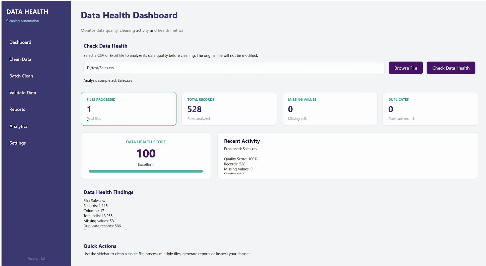
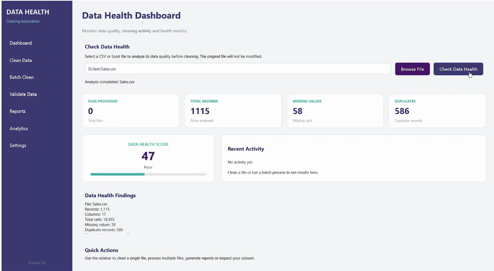
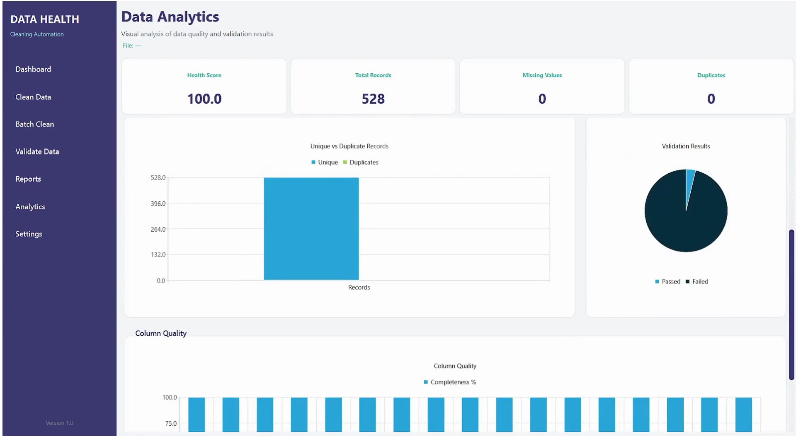
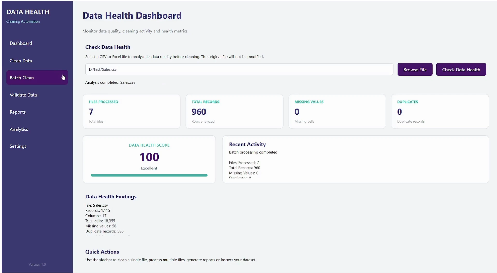

Data Health & Cleaning Automation Platform
Project Overview
The Data Health & Cleaning Automation Platform is a Python desktop application designed to help users inspect, clean, validate, and analyze CSV and Excel datasets through a structured workflow.
It combines data cleaning, configurable validation rules, before-and-after profiling, data quality scoring, batch processing, and report generation in one application.
1. Problem Statement
Business data often requires preparation before it can be used for analysis or management reporting. Spreadsheet files may contain duplicate records, missing values, inconsistent formatting, empty rows, or entries that do not meet expected validation rules.
Handling these issues manually can make data preparation repetitive and produce inconsistent results.
The application addresses this problem by providing a consistent process for identifying data quality issues, applying cleaning rules, validating records, and reviewing the results.
2. Project Objectives
The goal was to develop a desktop application that could:
- Automate common cleaning operations for CSV and Excel files.
- Identify duplicates, missing values, empty structures, and formatting inconsistencies.
- Apply configurable validation rules to check data against defined requirements.
- Compare data profiles before and after cleaning.
- Calculate data quality metrics and an overall health score.
- Support individual files and batch processing.
- Generate PDF and Excel reports and prepare cleaned data for downstream analysis.
3. Solution & Architecture
The application uses a modular design that separates the desktop interface from data processing, validation, profiling, and reporting logic.
Core Components
Data Cleaning Engine
Handles common data preparation tasks, including duplicate removal, empty-row and column removal, whitespace cleanup, and missing-value handling according to the configured rules.
Validation Engine
Checks datasets against configured validation rules. Rules are maintained in external JSON configuration files, allowing supported checks to be managed separately from the user interface.
Data Profiling & Health Scoring
Calculates data quality metrics before and after processing, including missing values, completeness, duplicate records, and an overall quality score.
Dashboard & Reporting
Presents processing information and quality metrics through the desktop interface. The application also supports generating PDF and Excel reports for reviewing results.
Batch Processing & Export
Processes multiple files through a common workflow and supports exporting cleaned datasets for further analysis, including Power BI workflows.
Application Interface

4. End-to-End Workflow
The application follows a structured process from importing data to reviewing and exporting the results.
Input Files → Initial Profiling → Data Cleaning → Validation → Post-Cleaning Profiling → Results Review → Export
Step 1 — Import and Profile
Load a CSV or Excel file and examine its structure and initial data quality.

Step 2 — Clean and Validate
Apply supported cleaning operations and check the processed dataset against the configured validation rules.

Step 3 — Review Results
Compare before-and-after metrics, review the quality score, and examine the results of the processing workflow.

Step 4 — Export
Save the processed data and generate supported PDF or Excel reports for further review and analysis.
5. Key Features
| Area | Features |
|---|---|
| Data cleaning | Duplicate removal, empty-row and column removal, whitespace cleanup, and missing-value handling. |
| Validation | Configurable rules, required-field checks, unique-key checks, and numeric range checks where configured. |
| Data profiling | Before-and-after profiles, missing-value metrics, completeness analysis, and duplicate counts. |
| Quality assessment | Overall data quality score and processing results. |
| Processing | Single-file and batch processing. |
| Reporting | PDF reports, Excel reports, and data quality summaries. |
| Integration | JSON-based rule configuration and Power BI-oriented data export. |
6. Technology Stack
| Technology | Role in the application |
|---|---|
| Python | Application logic and processing workflows. |
| PySide6 | Desktop user interface. |
| Pandas | Data loading, transformation, and profiling. |
| SQLite | Local metadata or processing history, where used. |
| Matplotlib | Data quality charts and visualizations. |
| ReportLab | PDF report generation. |
| JSON | External validation-rule configuration. |
7. Project Outcomes
The application brings common data preparation and quality-checking tasks into a single workflow.
Its practical benefits include:
- Consistent processing: Apply supported cleaning operations through a repeatable workflow.
- Improved visibility: Identify data quality issues before using datasets for downstream reporting.
- Configurable validation: Maintain supported validation rules outside the interface code.
- Easier review: Compare quality metrics before and after cleaning.
- Structured reporting: Produce reports that help users inspect processing results.
- Batch processing: Apply the supported workflow to multiple files rather than handling every file individually.
Processing-time improvements and reductions in data errors have not been quantified here. These can be assessed through benchmark testing with representative datasets.
8. Future Enhancements
Potential areas for further development include:
- Additional industry-specific validation rules.
- Scheduled processing and automatic folder monitoring.
- Additional database connectors for direct data ingestion.
- Expanded data quality trend analysis across processing runs.
Conclusion
The Data Health & Cleaning Automation Platform demonstrates how Python, data processing libraries, and desktop application development can be combined to create a structured data quality workflow.
The project brings data cleaning, validation, profiling, quality assessment, and reporting together, providing a foundation for more reliable downstream analysis and business reporting.